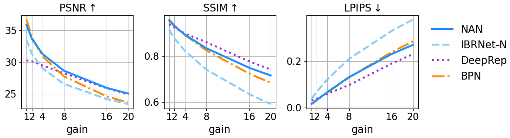

Denoising of Low-Light Scene
Download real world raw dataWe took the images with a Google Pixel 4.
We used only 8 images per burst, due to BPN's architectural limitation.
The data contains more images per scene.

You can cycle through the images by pressing key 1 to 8 .


5. BPN [1]

6. Deep-Rep [2]

7. IBRNet-N
Download results


Quantitative Evaluation
Comparison of Kernel Size and Bilateral in Post Processing

Novel View Synthesis Under Noise Conditions
LLFF-N Dataset - Gain 20
In the novel view task, the target frame is not available to the network, as opposed to the denoising task.


{kind=link}
BibTeX
@inproceedings{pearl2022noiseaware,
title={NAN: Noise-Aware NeRFs for Burst-Denoising},
author={Pearl, Naama and Treibitz, Tali and Korman, Simon},
booktitle=CVPR,
year={2022}
}
References
- Xia, Zhihao, et al. "Basis prediction networks for effective burst denoising with large kernels." In Proc. IEEE CVPR, 2020.
- Bhat, Goutam, et al. "Deep reparametrization of multi-frame super-resolution and denoising." In Proc. IEEE ICCV, 2021.
- Wang, Qianqian, et al. "Ibrnet: Learning multi-view image-based rendering." In Proc. IEEE CVPR, 2021.
- Mildenhall, Ben, et al. "Local light field fusion: Practical view synthesis with prescriptive sampling guidelines." ACM Transactions on Graphics, 2019.
- Mildenhall, Ben, et al. "Nerf: Representing scenes as neural radiance fields for view synthesis." In ECCV, 2020.
- Hasinoff, Samuel W., et al. "Burst photography for high dynamic range and low-light imaging on mobile cameras." ACM Transactions on Graphics, 2016.
- Monod, Antoine, et al. "An Analysis and Implementation of the HDR+ Burst Denoising Method." Image Processing On Line, 2021.